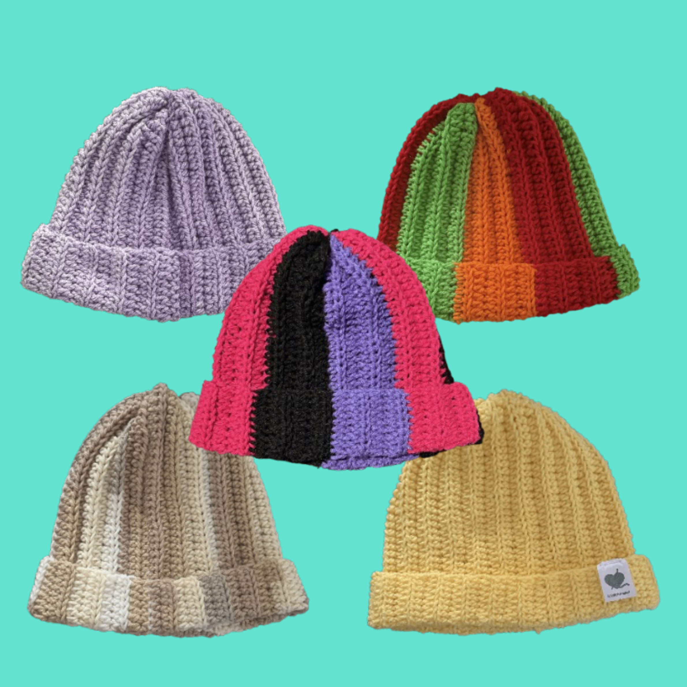
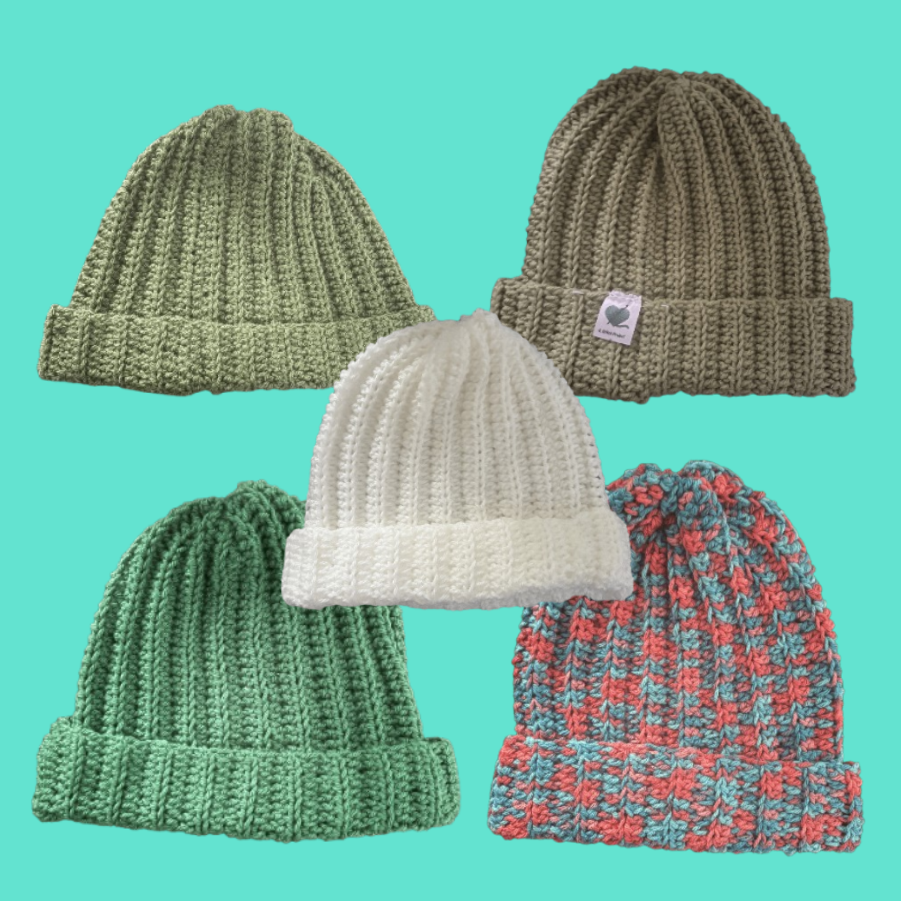

Beanie
Donated to...
Archive • Gallery • Progress
This page is a work in progress. As I continue to create and donate handmade crochet items, I will update this archive with photos of each project!
Back to homeprojects donated so far!

Donated to...

Donated to...